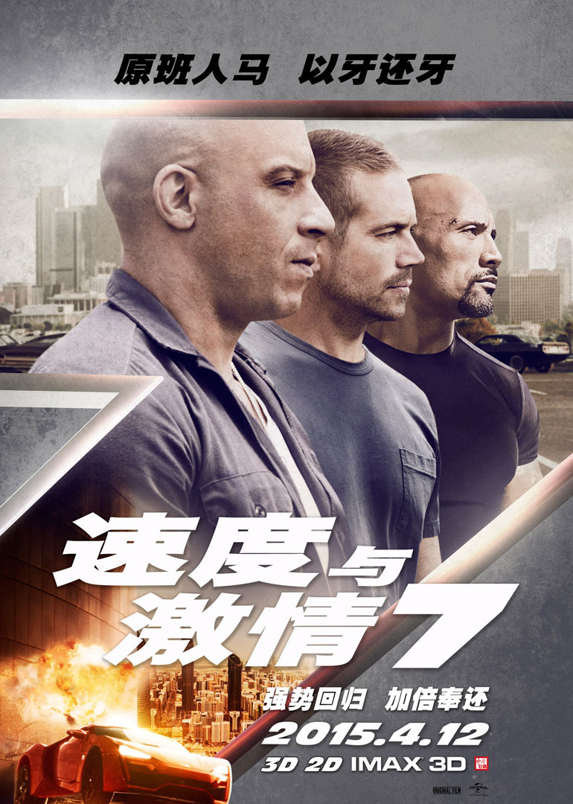

1、标准盒模型
2、怪异盒模型
3、弹性盒模型-多栏布局
《速度与激情7》（Furious 7）是环球影业出品的一部赛车题材动作片， 是《速度与激情》系列的第7部，由温子仁执导，范·迪塞尔、保罗·沃克、 杰森·斯坦森、米歇尔·罗德里格兹、道恩·强森等主演，于2015年4月3日 在美国上映，2015年4月12日在中国大陆上映。影片剧情将在多米尼克的团 队和大反派德卡特·肖之间展开，讲述德卡特·肖为其弟报仇的故事。 《速度与激情7》（Furious 7）是环球影业出品的一部赛车题材动作片， 是《速度与激情》系列的第7部，由温子仁执导，范·迪塞尔、保罗·沃克、 杰森·斯坦森、米歇尔·罗德里格兹、道恩·强森等主演，于2015年4月3日 在美国上映，2015年4月12日在中国大陆上映。影片剧情将在多米尼克的团 队和大反派德卡特·肖之间展开，讲述德卡特·肖为其弟报仇的故事。 《速度与激情7》（Furious 7）是环球影业出品的一部赛车题材动作片， 是《速度与激情》系列的第7部，由温子仁执导，范·迪塞尔、保罗·沃克、 杰森·斯坦森、米歇尔·罗德里格兹、道恩·强森等主演，于2015年4月3日 在美国上映，2015年4月12日在中国大陆上映。影片剧情将在多米尼克的团 队和大反派德卡特·肖之间展开，讲述德卡特·肖为其弟报仇的故事。
4、弹性盒模型-图片居中

5、弹性盒模型-水平适配
6、弹性盒模型-垂直适配